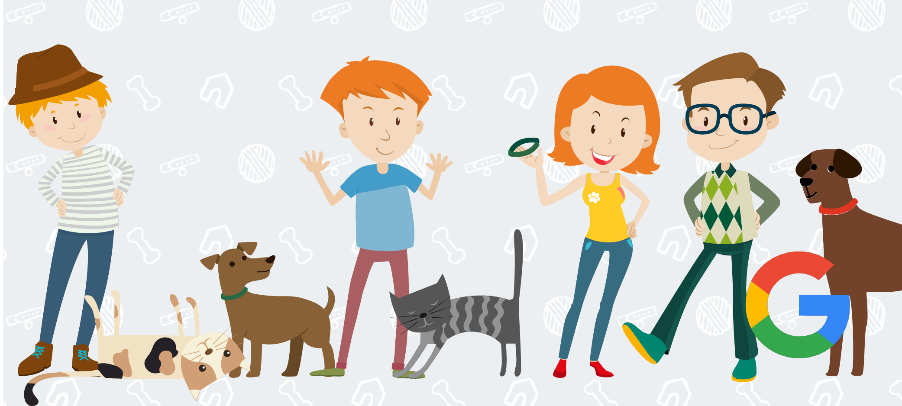

PAWP
PAWP
Google Design Challenge
(Original icons from FreePik)
PROBLEM STATEMENT:
Animal shelters rescue and take in more animals than they have space for. Unfortunately, this means that if the animals are not able to be adopted, they will have to be euthanized.
The eventual goal for almost all shelters is to become a “no-kill” shelter. Thus, promoting adoption to the general public is a must. Furthermore, adoption can also decrease demand from animal mills with poor practices that are considered unethical.
Even so, adoption is only the first step to success. There is a high value in ensuring a good home for the adopted pets. This means making sure that their lifestyles and emotional needs align with their pet owners’. This will decrease the chances animal neglect and returns.
OPPORTUNITY:
With the internet age, many start the adoption process by searching for more information online. Thus, any online investigation is an opportunity for a web and mobile app to promote animal adoption.
TASKS COMPLETED:
- Utilize tools such as Illustrator, Photoshop, HTML, CSS, JS, Jquery, fullpage.js
- Conduct secondary research, primary research,identify users, current user flow, product opportunity, and product goals
- Process includes platform navigation and layout exploration, wireframes, task flow, mid-fidelity wireframes, and high fidelity mock-ups
- Prepare and present project into slides in sketch, then in web format with code